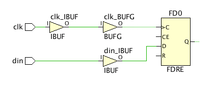

Understanding Input Delays
Figure: Example of an input delay constraint on a port:

The input signal din is captured by the register FD0 on the rising edge of the clock clk. The input delay constraint describes the delay between the clock launch edge and the time the signal din transitions at the input of the device. Both the input delay max and min values must be specified to accurately perform setup/recovery and hold/removal checks respectively. After selecting the type of interface (system or source synchronous, edge alignment, reference edge, and data rate), you must define various delay parameters needed by the wizard to compute the min and max input delay values. For example:
set_input_delay -clock clk 3.4 [get_ports din] -max set_input_delay -clock clk 1.0 [get_ports din] -min
When the input path internal clock is not a simple phase-shifted copy of the board clock, the wizard uses a virtual clock, which is a copy of the internal clock, in the input delay constraint. This allows timing analysis to report the input path with a full clock period path requirement.
When the input path internal clock has a positive phase shift compared to the reference board clock, the wizard adjusts the setup path analysis to 1 clock period + the phase shift by specifying a multicycle path exception on this input port.
You can use the Only show constraints with undefined delay parameters button on the left side of the window to identify constraints that are still missing.
Understanding the Input Delays Page
- Recommended Constraints: The Timing Constraints wizard analyzes timing paths from the input ports to identify the destination clock and their active edges. The wizard recommends basic input delay constraints based on predefined constraint templates for source synchronous or system synchronous data interfaces.
- Delay Parameters: Lets you define delay parameters associated with the currently selected interface in the Recommended Constraints. The various delay parameters are determined by the predefined constraint template.
- Tcl Command Preview: Displays the set_input_delay commands used to define input delays as listed in Recommended Constraints. These are the constraints that will be added to the design.
- Existing Constraints: Displays currently defined input delay constraints.
- Waveform: Displays a representative timing diagram for the input delays of the predefined template.
Each of the preceding sections also has a toolbar menu that provides access to one or more of the following commands:
 |
Search | Displays a text entry field to enter a search string for the listed constraints. |
| Select All | Selects all constraints. | |
| Schematic | Opens a schematic window to display the selected port and reference clock.
Tip: The schematic is displayed in the Schematic window.
|
|
| Clock Networks | Displays a sub-menu to provide access to the Report Clock Networks command to generate a new clock network report, and the View Clock Networks command to open an existing report. | |
| Filter Constraints | Lets you quickly display categories of recommended constraints, such as those with errors, or those that are undefined. |
See Also
| UltraFast™ Design Methodology Guide for the Vivado® Design Suite (UG949), Constraining Input and Output Ports | |
| Vivado Design Suite User Guide: Using Constraints (UG903), Input Delay. | |
 |
Vivado Design Suite QuickTake Video: Setting Input Delay |